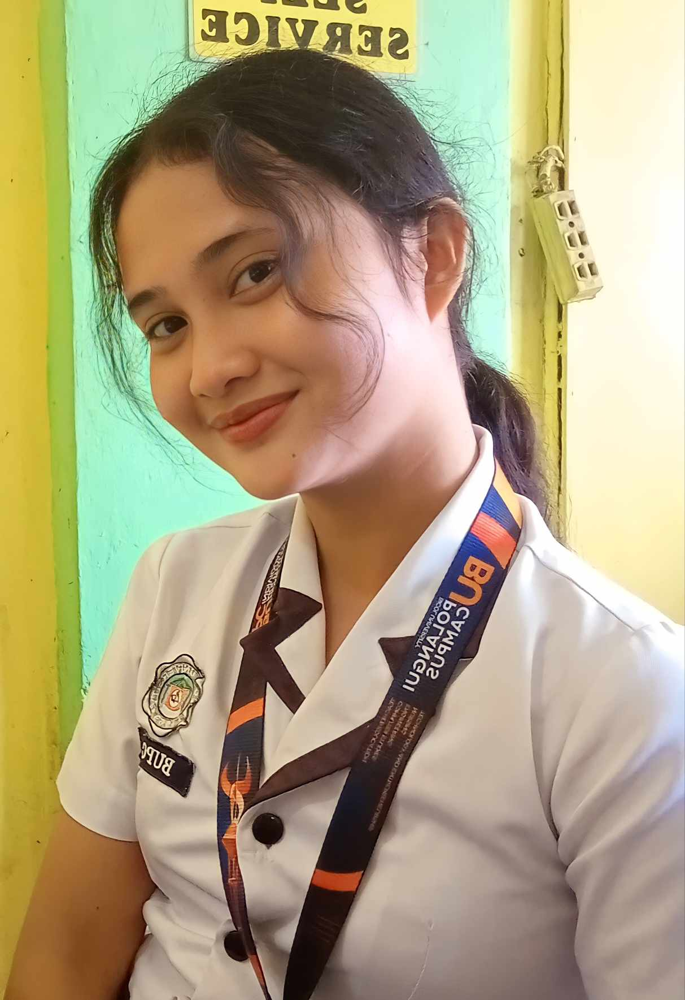

|  | MY BIOGRAPHY |
|
|
My name is Jamaica Realisan, 19 years old.My parents names are Librada Realisan, and Giovanni Realisan. I have 3 brothers and 2 sisters, and I'm the youngest.I am a college student at BUP, a BSIS student.There are lots of things I'd loved to do, like spending times with my family,friends, and helping in the church.I enjoy watching kdramas and listening to kpop songs. It gives me joy and peace when I'm with my loved ones, and to the things that I wanted to do. My goals in life is to finish my studies, and my ultimate dream is to become a firewoman.And at the same time, become successful in the near future. As a student, I am leaving a very simple yet a fruitful life. I started as a toddler who wants my parents to be proud of me. I did my very best to study hard and to receive an award every end of the school year. Then I came to the first ground of my studies, my elementary days. At this point of my life, I gained lot of friends. I had a lot of chances to meet and face different kind of people. Then I entered to my high school life. I can say that this is the most adventurous and wonderful part of my life. This is the time that I met my true friends. And until now, we are still all together. I can say that our friendship will never end and we will all be friends until the end of time. And now, I am in my tertiary level, my college life. This is a wider world for me. Indeed, college can be tough especially when you don’t have money but bear in mind that these challenges should not hinder you to achieve your goals. You need to face the reality that college is a tough battle. It’s an arena that will mold your future and education will be the weapon that cannot be taken by someone. You are the master of your show. Ignore all the hindrances. Pursue your dream no matter how hard it is. Don’t let anything pull you away from your success. I may not be taking up my dream course, but I will do my best, strive hard and enjoy my college life!Thats my story all about,and I can say is that continue and keep on fighting, we can do this,PADAYON! |
|
|
Check me out on : | |